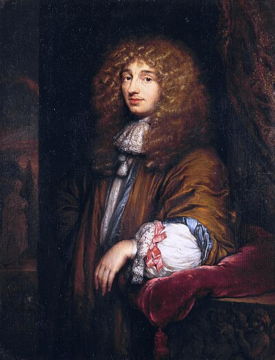

1629–1695
Dutch
Probability, optics, astronomy, mechanics
Christiaan Huygens was the leading natural philosopher in Europe between Galileo and Newton. Born into a wealthy and well-connected Dutch family — his father Constantijn was a diplomat and friend of Descartes — Huygens had the resources and education to work across mathematics, physics, and astronomy with equal mastery.
His contribution to probability theory came early, in 1657, with De Ratiociniis in Ludo Aleae (On Reasoning in Games of Chance). This was the first published textbook on probability, appearing three years after the Pascal–Fermat correspondence but independently conceived. Huygens formalised the concept of expected value — the "value of a chance" — as the price a rational person should pay to enter a game. This foundational idea underpins all of modern probability and decision theory.
In physics, Huygens proposed the wave theory of light in his Traité de la Lumière (1690). His principle — that each point on a wavefront generates secondary wavelets — explained reflection and refraction more naturally than Newton's competing corpuscular model. The debate was settled in Huygens' favour in the 19th century by Young's double-slit experiment and Fresnel's diffraction theory.
As a practical inventor, Huygens built the first pendulum clock in 1656, improving timekeeping accuracy by a factor of sixty. He also ground his own telescope lenses, discovering Saturn's moon Titan and correctly interpreting Saturn's rings. He spent fifteen years in Paris as a founding member of the Académie des Sciences before returning to the Netherlands, where he spent his final years in relative isolation.
| Phase | Page | Referenced for |
|---|---|---|
| Phase 12 | Random Variables and Expectation | Formalised expected value as "value of a chance" (1657) |
| Phase 12 | Random Variables and Expectation | De Ratiociniis in Ludo Aleae — first probability textbook |